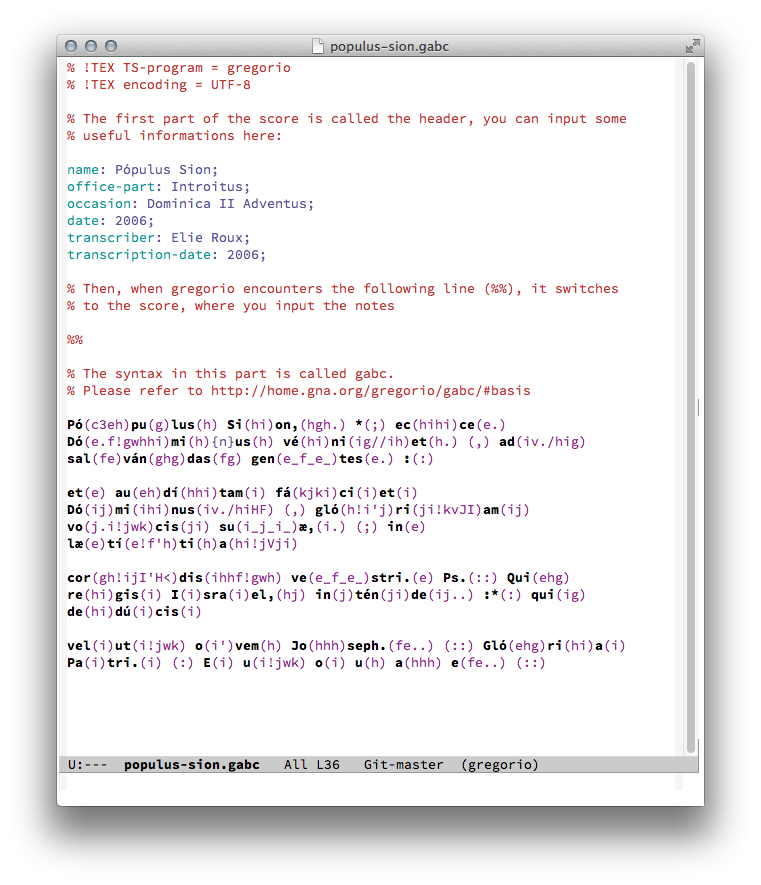
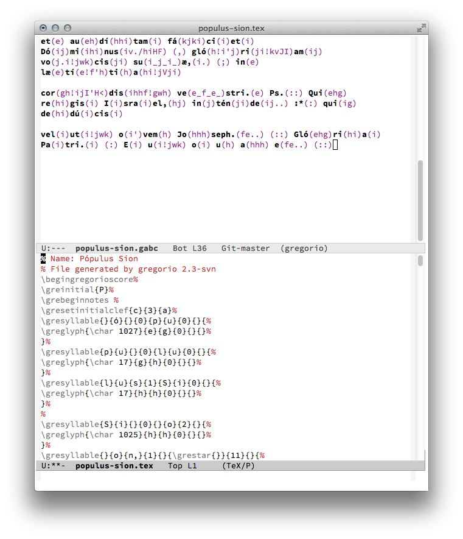
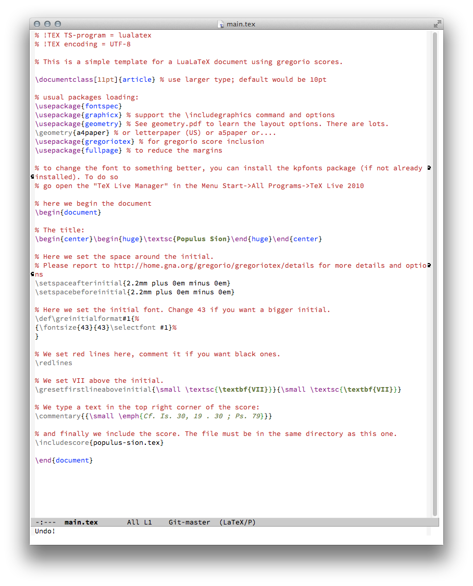
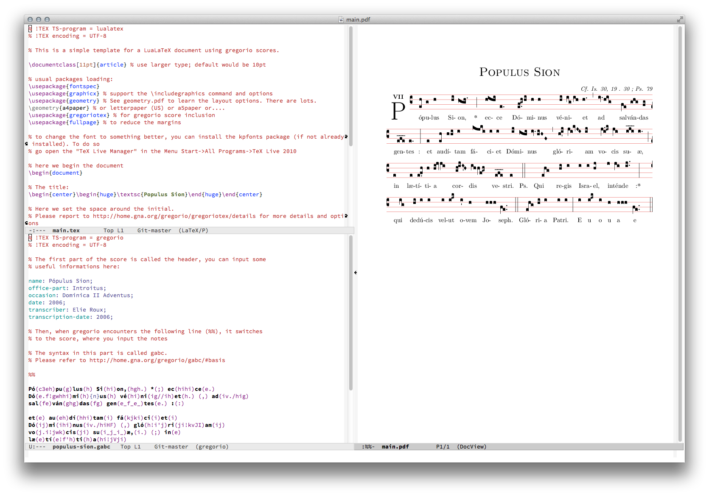
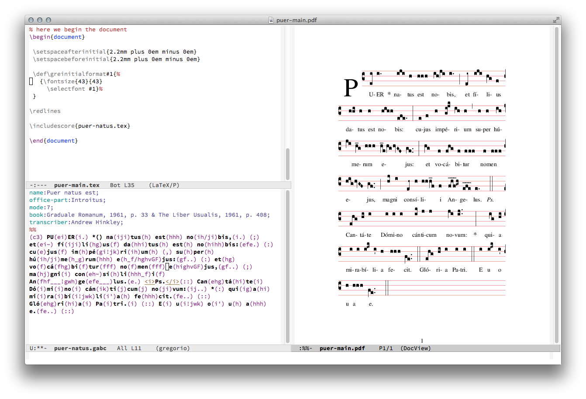
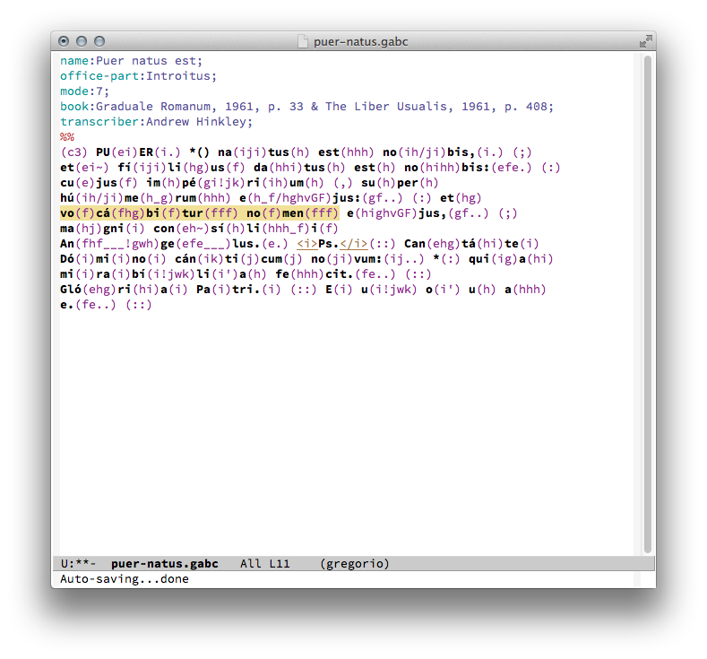
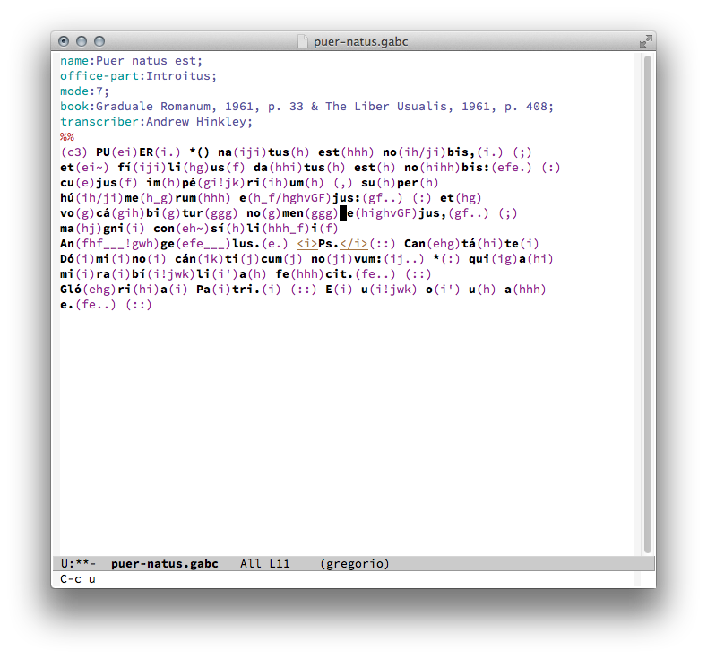
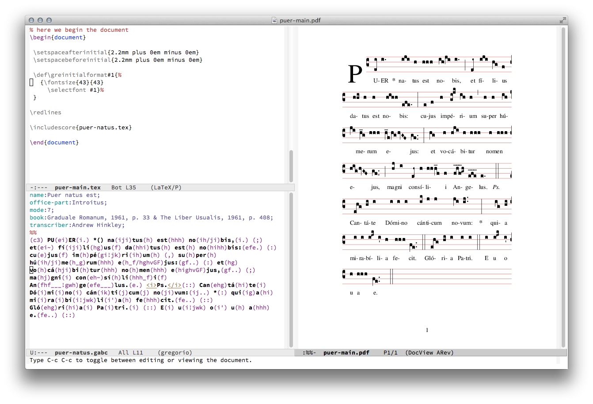

Once you have installed gregorio-mode.el as in the instructions, gregorio mode will become active upon loading a .gabc file. If you wish to immediately start writing a new file, simply open a new buffer and then type:
M-x gregorio-mode RET
You will notice immediately that there is now simple syntax coloring for the gregorio file. These can be customized by modifying the values in the gregorio-mode.el file. Note that the notes are a separate color from the text, and that the text itself is bold so that it is easier to discern and find eventual errors.
For the syntax of gabc you should study the tutorial available on the gregorio site.
When you have completed your .gabc file, the gregorio-mode has some simple functions that can be useful. The most important of these is the making of the .tex file. In order to compile your .gabc source into tex, simply press C-c C-e. You will then see another buffer form in another window which contains the TeX source generated from the .gabc file.
You will notice that the new buffer is already in tex-mode for syntax highlighting, but it hasn't been saved yet. This allows you to quickly inspect the code and you can modify it as well. To save with the default name which is simply the same name as the .gabc file with a different extension (.tex instead of .gabc), simply type C-x C-s. If you already have a file with that name you will be asked if you want to overwrite it.
Note that this .tex source cannot be typeset by itself. The usual way of typsetting gregorio is to insert the source in another LaTeX document which is the template. You can see an example of this template on the gregorio website, or in the examples folder of gregorio-mode.el.
In this template (main.tex in our case) you include the source which you have just created from the .gabc file by the TeX command:
\includescore{file_name.tex} where 'file_name.tex' is the name of the file you saved after creating the tex source.
While in the template file, if your emacs is already set up for using luatex as the tex engine, you can just press C-c C-c and you will be able to view the new .pdf with your score. Of course you can also use an external pdf viewer as well.
Gregorio-mode includes a very useful function for tranposing sections of your score. In this small example, from the Introit of in Die Nativitatis Domini, we have a section which was transcribed a whole third down, from text vocabitur nomen, as you can see in this screenshot.
You can of course correct this the usual way by returning to the code and changing each letter. However, there is a faster way using the transposing function. In order to do this, simply create a region by setting a mark and then moving the point to the end of the score you want to transpose (some editors call this making a selection) as in this screenshot:
There are two commands now that work on the region: transpose-up and transpose-down. They are bound to the keys C-c u and C-c d respectively (C-c is the prefix, then 'u' for up, 'd' for down). In our case the region is too low, by a minor third in fact, which means we have to move our region up two diatonic steps. In order to do this, you need but press the key:
C-c u
Notice that the transpose function does not alter the region, so you can simply press the same key again to move the same region upwards a tone:
C-c u
Note that you can also move the same region down with the function C-c d if you happen to press the key too many times.
Alternatively, you can provide a numerical prefix argument (C-u N) to transpose N diatonic steps:
C-u 2 C-c u
This will transpose the score up a minor third. You can use this same method to transpose the score downwards as well:
C-u 2 C-c d
You can also modify the key to whatever you would like by changing the values in the gregorio-mode.el file, or preferably in your emacs init file.
All is good now, so we can save our gabc file, press [C-c C-e] to generate the source, and finally make the pdf: 
Some scores, such as dialogues and readings/lessons, repeat the same note over many syllables and words. To easily fill these in, begin by inserting parentheses into the proper locations in the text.
In() no()mi()ne() Pa()tris()
Then highlight the region you wish to fill in and press:
C-c f
In the minibuffer there will be a prompt "Note to fill with:". Type the letter of the note and press RET. Voila, you should now have (with the note you wanted):
In(h) no(h)mi(h)ne(h) Pa(h)tris(h)
You can use [C-M-f] and [C-M-b] for quickly moving (forwards and backwards respectively) from one punctum group to another punctum group.
The syntax highlighting can be customized by one of three methods:
You can change the list of possible attribute keywords for the header in gabc files: